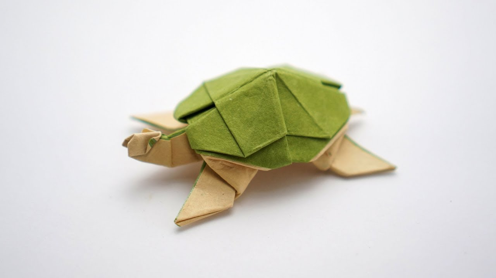

Origami Dove
Origami Dove is one of the most simple yet most meaningful art.
The dove has a deep meaning of peace and equality.
Origami Turtle
Though this is not the most easy origami figure to draw, it is still very fun to make.
Origami figures such as turtles started being made as early as the 6th century.
They were first made in Japan and are now made everywhere